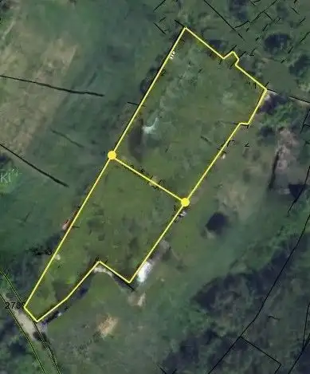

Pozemok v rozvíjajúcej sa oblasti Zečák - Rázsochy
Lamač, Bratislava


- Plocha1612 m²
O nehnuteľnosti
Ponúkame na predaj atraktívny pozemok v dynamicky sa rozvíjajúcej lokalite Lamač – Zečák.V rámci plánovaného rozvoja územia sa predpokladá vybudovanie prístupových ciest, elektrických prípojok, vodovodu a kanalizácie. Podrobnejšie informácie o aktuálnom stave rozpracovanosti radi poskytneme osobne na stretnutí.Celková výmera pozemku je 1 612 m².Kúpa je možná v dvoch alternatívach:Celá výmera pozemku za 370 000,- €699,86 m2 za 180 000,- €Prístup k pozemku je možný autom po nespevnenej komunikácii, a to z hornej aj spodnej časti.Podľa územnoplánovacej informácie je funkčné využitie určené pre nízkopodlažnú obytnú zástavbu – rodinné domy, radové rodinné domy a bytové domy do výšky 2 nadzemných podlaží a 1 ustúpeného podlažia.Pozemok má výbornú juhozápadnú orientáciu.Vyššie uvedená cena je vrátane kompletného právneho servisu.V prípade záujmu ma prosím kontaktujte na:Lenka Zmijová, 0903 417 106, lenka@kabereal.sk
Parametre
- Druh
- Rekreačný pozemok
- Dátum zverejnenia
- 12. 05. 2026
- Dĺžka pozemku
- 81
- Elektrina
- Nedostupné
- Funkčné využitie
- Výstavba rodinného domu
- Odpadové vody
- Nedostupné
- Plocha pozemku
- 1612 m²
- Plyn
- Nedostupné
- Pripravenosť k výstavbe
- Schválené v územnom pláne
- Prístupová komunikácia
- Hlinená - nespevnená
- Terén pozemku
- Mierne svahovitý
- Typ
- Predaj
- Voda
- Nedostupné
- Územie
- Intravilán
- Šírka pozemku
- 27